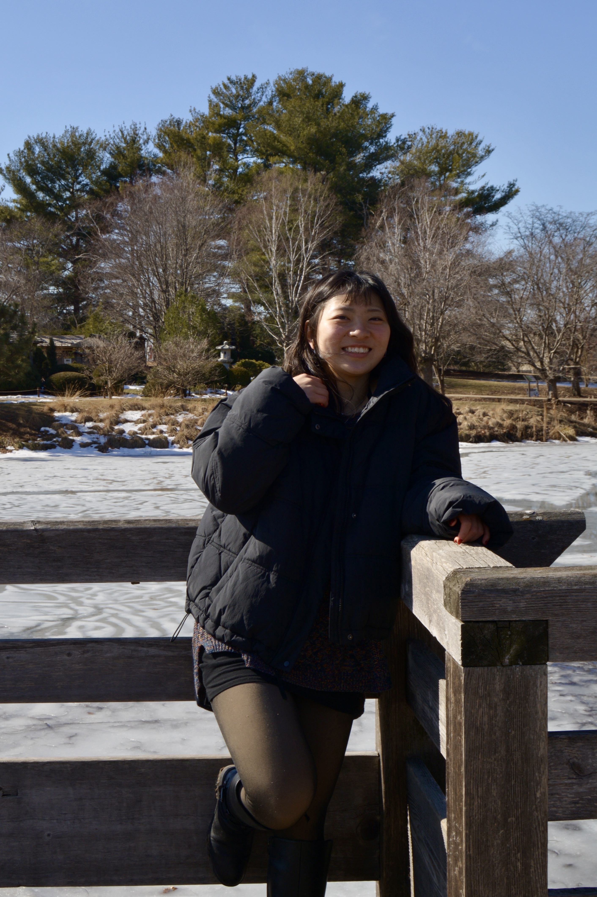

Hello, my name is Mira!
I am an artist based in Sycamore, IL, and through my paintings and digital works, I hope to share the vibrancy of life with others!
By focusing on the intensity of hues to highlight the beauty of everyday life, such as simple neighborhood sights, I hope to encourage others to appreciate the color, structure, and aesthetic of such scenes.
I have earned a bachelor’s degree in Applied Mathematics with a minor in Physics from the University of Illinois Urbana-Champaign. For my future endeavors, I am eager to explore ways to experiment with different techniques + styles to find connections and incorporate my math background into my artistic visions.
When I’m not making art, I love baking goodies for my friends, crocheting, spending time in nature, and discovering new ways to grow as an artist and bring my ideas to life!
